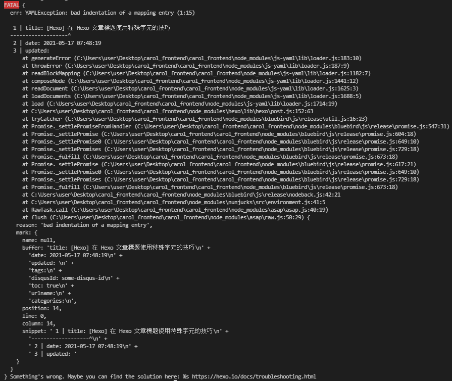
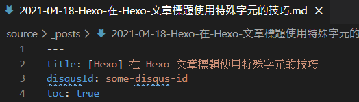
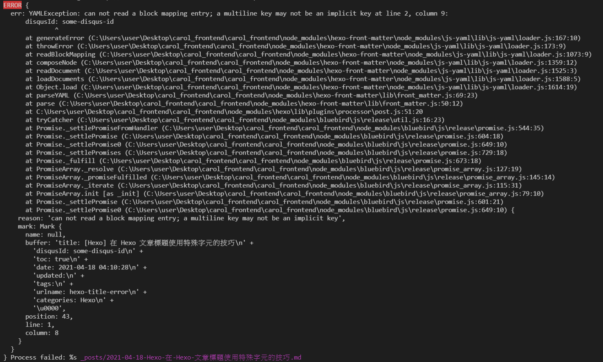

[Hexo] 在 Hexo 文章標題使用特殊字元的技巧
因為想要在文章標題中添加分類名，遇到報錯，順便做個記錄
一、在文章標題中使用特殊符號時，會報錯
若在文章標題中使用特殊符號時 (例如：[] 中括號)，會出現錯誤訊息
1. 創建文章時，標題使用特殊字元，會出現錯誤訊息：
例如： 使用指令 $ hexo new post "[Hexo] 在 Hexo 文章標題使用特殊字元的技巧"

2. 若是已建立的文章直接更改標題，後使用 hexo s 時也會出現錯誤訊息：


二、解決方案：
1. 使用 - 符號替代
1 | title: Hexo - 在 Hexo 文章標題使用特殊字元的技巧 |
2. 將標題以引號 '' 或雙引號 "" 包裹起來
在建立文章後，修改標題，使標題被單/雙引號包住
1 | title: "[Hexo] 在 Hexo 文章標題使用特殊字元的技巧" |
備註：
在查找過程中，有看到使用特殊字元的方法，例如：
但測試後依然無法顯示特殊字元